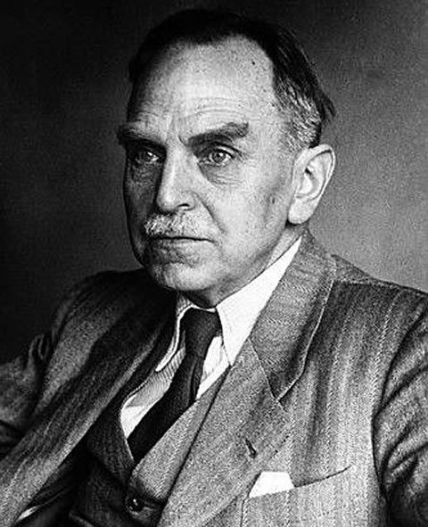
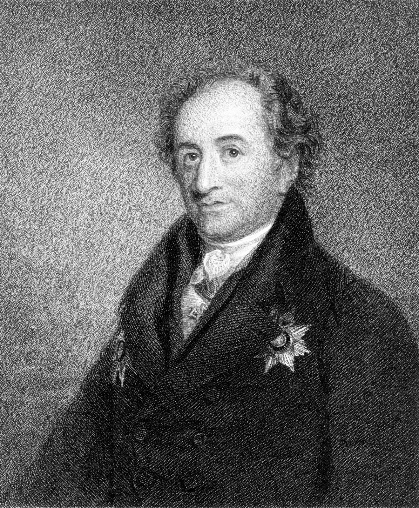

Con más de 753.000 habitantes, Frankfurt am Main ocupa la quinta posición entre las ciudades más pobladas de Alemania. Además casi un 30% de su población son extranjeros, por lo que se le conoce como la ciudad más internacional de Alemania.
Ana FrankAna Frank era una niña judía alemana y víctima del Holocausto que se escondió de los nacionalsocialistas con su familia en un edificio trasero en Amsterdam, fue deportada poco antes del final de la guerra, y cuya historia se dio a conocer a través de su diario publicado por su padre Otto Frank. Ver más |
|  |
Olto HahnOtto Hahn fue un químico alemán y pionero de la radioquímica que descubrió los primeros núcleos isoméricos ("Uran Z") en 1921 y, junto con Fritz Straßmann, la fisión nuclear del uranio en 1938 y fue galardonado con el Premio Nobel de Química de 1944 por su investigación. Ver más |
Johann Wolfgang von GoetheJohann Wolfgang von Goethe fue un famoso poeta y escritor alemán que, como representante de los clásicos de Sturm und Drang y Weimar, escribió obras como "Götz von Berlichingen" (1773), "Los dolores del joven Werther" (1774) y "Fausto" (1806). / 1832) y se hizo un nombre como científico y político. Ver más |
 |